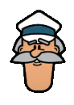

Pisi (Açılımı: Packages Installed Successfully as Intended), Python dilinde yazılmış bir paket yönetim
sistemidir. Bağımlılıklara bakarak paket oluşturma, kurma, kaldırma, yükseltme ve benzeri işlevleri yerine
getirir. XML ile tanımlanmış ve oluşturma
süreci bir Python betiği ile verilmiş kaynak paketlerden ikili paketler oluşturur ve bunları
bağımlılıklarına bakarak kurup kaldırabilir. Kullanıcı dostu bir çizgelik arayüz ve kapsamlı bir komut
yatacı arayüzü içerir.
ÇOMAR (Yapılandırma Yöneticisi)
ÇOMAR (Açılımı: COnfiguration MAnageR), dizgenin düzgün çalışması için gerekli olan donanım, açılış, ağ,
kullanıcı, zaman, görüntü gibi ayarların mümkün olduğu kadar kendiliğinden yapılmasını sağlayan,
kullanıcılara bir yetki denetiminde bu ayarları
bayağı ve anlaşılır bir biçimde değiştirme olanağı sağlayan bir yazılımdır.

Kaptan
Kaptan, Pisi Linux kurulumu sonrasında ilk açılışta kullanıcıyı masaüstünde karşılayan ve daha sonra
masaüstünü kişiselleştirmek için kullanabilen bir ayar sihirbazıdır. Kaptan, Pisi Linux hakkında genel
bilgiler verirken kullanıcının masaüstünü
daha rahat kullanabilmesi için ağ bağlantıları gibi belli başlı yapılandırma seçeneklerini sunar ve aynı
zamanda kullanıcının masaüstünü şahsîleştirmesine de yardımcı olur.